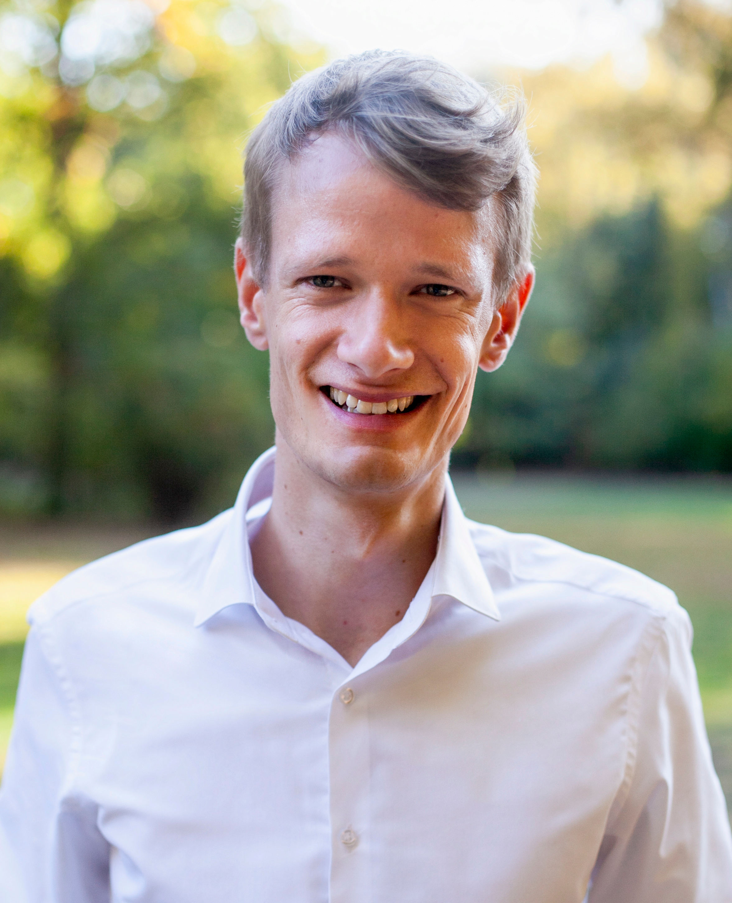

Postdoctoral Max Weber Fellow
Department of Political and Social Sciences
European University Institute
I am a sociologist and a postdoctoral Max Weber Fellow at the European University Institute.
My research investigates social inequalities over the life course and the institutional and cultural mechanisms that shape them.
I focus in particular on the reasons and consequences of women and men working in different occupations and how compulsory services, such as military service and its civilian alternatives, shape individual and societal outcomes.
Methodologically, I specialize in quantitative analyses of administrative and survey data, employing research designs that support causal inference in both observational and experimental settings.
Previously, I substituted for the Professorship of Microsociology at Humboldt-Universität zu Berlin and have been a visitor at the departments of sociology of Brown University and University of Haifa.
I hold a PhD in Sociology from Humboldt-Universität zu Berlin, where I also obtained a Bachelor and Master of Arts in Social Sciences.
You can find my complete CV here.
Investigating the Analytical Robustness of the Social and Behavioural Sciences (with Balasz Aczel, Barnabas Szaszi, Harry T. Clelland, Brian A. Nosek, and 486 other authors]). 2026. Nature, 652: 135–142.
A threat next door? A research note on proximate interstate conflict causing willingness to fight based on Russia's invasion of Ukraine. 2026. International Journal of Public Opinion Research, 38: online first.
Tailored to Women, Provided to Men? Gendered Occupational Inequality in Access to Flexible Working-Time Arrangements (with Aljoscha Jacobi & Tabea Naujoks). 2025. Social Indicators Research, 176: 1179-1205.
Anti-Immigrant Bias in the Choice Between Punitive and Rehabilitative Justice (with Sascha Riaz). 2025. British Journal of Political Science, 55: online first.
Gender Compositions of Occupations and Firms Jointly Shape Switches from Gender-Atypical Towards More Gender-Typical Positions (with Eileen Peters). 2024. European Societies, 26 (4): 1170-1194.
Intersections and Commonalities: Using Matching to Decompose Wage Gaps by Gender and Nativity in Germany (with Maximilian Sprengholz). 2024. Work and Occupations, 51 (2): 249-286.
Comparing the Incomparable? Issues of Lacking Common Support, Functional Form Mis-Specification, and Insufficient Sample Size in Decompositions (with Maximilian Sprengholz). 2024. Sociological Methodology, 53 (2): 344-365.
Gender-Atypical Learning Experiences of Men Reduce Occupational Sex Segregation: Evidence from the Suspension of the Civilian Service in Germany. 2023. Gender & Society, 37 (4): 524-552.
Marriage, the Risk of Overeducation, and Selection into Both: Evidence from Germany (with Paul Schmelzer). 2022. European Sociological Review, 38 (1): 73-87.
Can Regional Gender Ideologies Account for Variation of Gender Pay Gaps? The Case of Germany. 2021. Social Sciences, 10 (9): 347.
Do-files for working with SOEP spell data (with Paul Schmelzer & Tobias Wolfram). 2018. SOEP Survey Papers, Series G: 492.
Do Occupations Confer Equal Prestige on Female and Male Incumbents? (with Ferdinand Geissler, Johannes Giesecke & Markus Schrenker; revise & resubmit at Social Forces).
Russia's Invasion of Ukraine and Perceived Intergenerational Mobility in Czechia and Uruguay. An Unexpected Event During Survey Design Study (with Patrick Präg & Alexi Gugushvili; revise & resubmit at Social Science Research).
The Flip Side of Gender Segregation: Cross-National and Temporal Variation in Men's Participation in Female-Dominated Occupations (with Marga Torre; under review).
Does Mandatory Military Service Shape Men's Occupational Choices? Evidence from the Suspension of Conscription Across Europe (with Leandro Iván Canzio).
Male-Dominated Institutions and Gender Equality at Home: (The End of) Conscription in the United Kingdom (with Leandro Iván Canzio).
Within-Occupational Prestige Variation Across Workers (with Ferdinand Geissler & Johannes Giesecke).
Devaluation of 'Women's Work' or Work Done by Women? Experimental Evidence Across Countries (with Marga Torre, Zoltán Lippényi, and Irene Prix).
"Do You Think That I Should Care?" Measuring Social Expectations About Cognitive Labor in Household Contexts (with Tabea Naujoks).
Introduction to Social Science Research
Topics: Introduction to methodology of social science research, reading and writing academic manuscripts
Gender Inequalities - Theory and Empirics
Topics: Theories on gender inequalities in education, the labor market, and the domestic domain; from theory to empirical comparisons; designing quantitative studies
Academic Writing in Social Demography
Topics: Critical reading of manuscripts; assessing contributions; writing drafts and providing constructive feedback; describing results
Empirical Social Research
Topics: Designing and implementing students' survey experiments
Statistics
Topics: Descriptive statistics, statistical inference and hypothesis testing, linear and logistic regression, exploratory factor analysis
What others think you can do, but you can't do, and what you can do about it
Topics: Data wrangling, writing simulations to evaluate estimators, bootstrapping, further topics regarding regression analyses